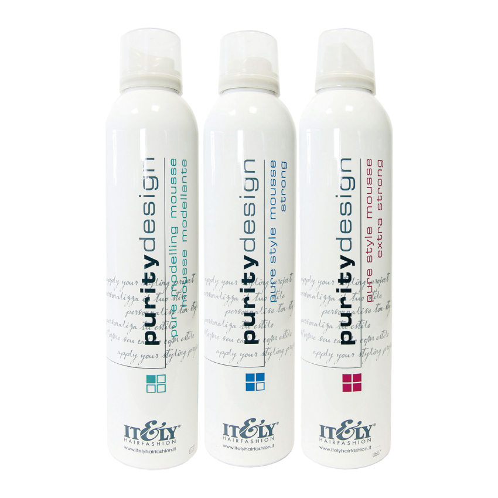

 |
PURE STYLE MOUSSEMousse fixadora, modeladora e de volume que dá brilho e controle para o cabelo. Agave, Joshua tree, cholla cactus e outros extractos de plantas preciosas do deserto fazem dele um produto rico em nutrientes e protecção. Aplique a quantidade necessária nos cabelo húmidos depois do shampoo e do penteado. Embalagem 300 ml - Mousse modelante. Fixação 1 |